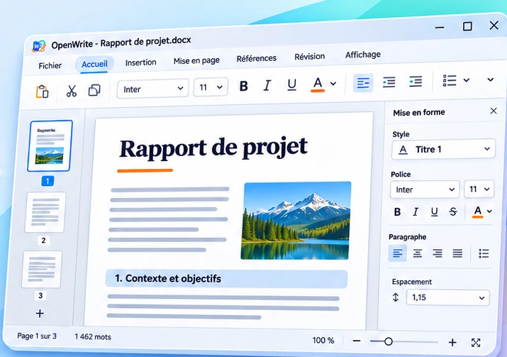

Rédaction fluide
Outils d’écriture, styles, listes et mise en forme dans une interface pensée pour la productivité.
Rédigez et mettez en forme vos documents avec une interface claire, rapide et élégante.

Aperçu conceptuel de l’éditeur — illustration, non capture réelle
Outils d’écriture, styles, listes et mise en forme dans une interface pensée pour la productivité.
Une expérience pensée pour l’ouverture et l’export de documents dans plusieurs formats.
Le même esprit de création qu’OpenPub, adapté aux documents et au traitement de texte.
Les informations de téléchargement et d’assistance seront disponibles lors de la publication de l’installeur.